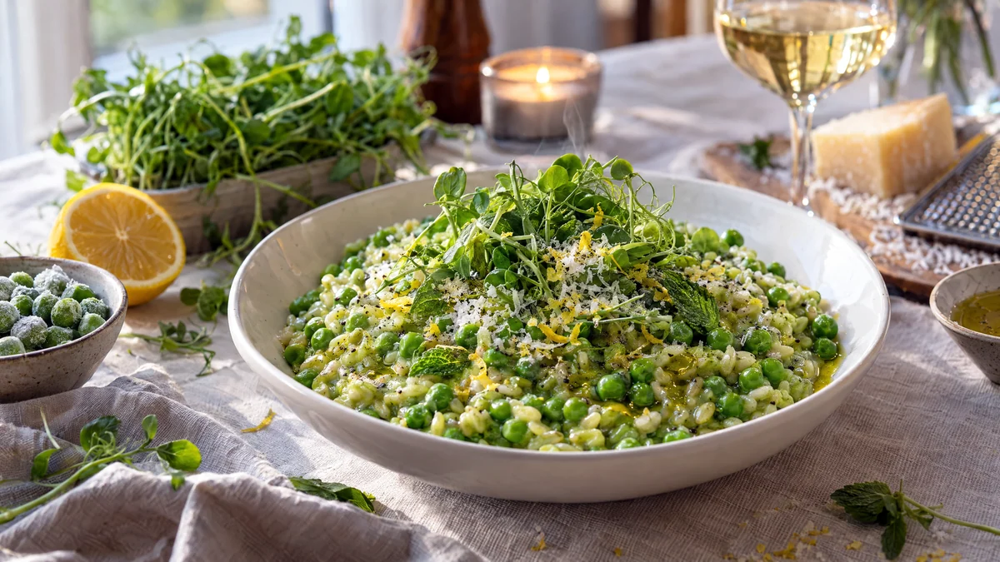

RESTFEST · RECEPTHuvudrätt
Korngrynsotto med gröna ärtor, citron och parmesan
Svenska korngryn, en påse frysta ärter och en bit lagrad ost. Kornet kokas långsamt som en risotto tills det blir krämigt men behåller sin tuggighet, och hälften av ärterna mixas till en klargrön puré som färgar hela grytan. Toppad med ärtskott, citronskal och parmesan blir den vår på tallriken mitt i vintern.
- Förberedelse
- 10 min
- Tillagning
- 35 min
- Portioner
- 4
- Nivå
- Medelsvårt
 Det här behöver du
Det här behöver du
JÄMFÖRT MED DIN KYL
Tryck på + vid det du behöver köpa.
Korngrynsotto
Till servering
Gör så här
- Finhacka löken och vitlöken. Fräs dem i olja och smör i en vid kastrull på medelvärme i 4–5 minuter, tills löken är mjuk.
- Tillsätt korngrynen och rör i 1 minut, tills de har blivit glansiga.
- Häll i vinet och låt det koka in under omrörning.
- Tillsätt buljongen, ca 2 dl i taget. Rör ofta och fyll på när vätskan nästan har kokat in. Efter 25–30 minuter ska kornet vara krämigt men fortfarande ha lite tugga.
- Mixa hälften av ärterna med 1 dl av buljongen till en slät puré med stavmixer.
- Rör ner ärtpurén och de hela ärterna och låt sjuda i 3 minuter.
- Ta kastrullen från värmen och rör ner smör, ost, citronskal och citronsaft. Smaka av med salt och peppar. Låt stå under lock i 2 minuter.
Dekoration och servering
- Servera korngrynsotton i djupa tallrikar, den ska vara lös nog att flyta ut lite.
- Toppa med en tuss ärtskott, några myntablad, extra parmesan, citronskal och en droppe olivolja.
- Parmesan och många andra lagrade ostar görs med löpe från djur. Vill du vara helt vegetarisk, välj en ost med mikrobiellt löpe.
- Kornet blir fastare när det svalnar. Späd rester med lite buljong när du värmer dem.
Mått och ugnstemperaturer
Måtten är svenska (dl, msk, tsk, krm). Ugnstemperaturerna gäller vanlig ugn med över- och undervärme; med varmluft, sänk med 20 grader.